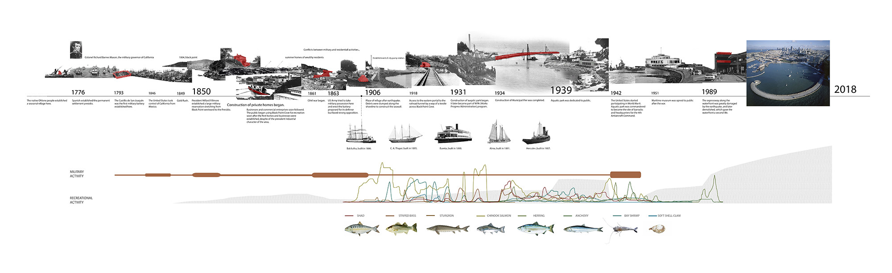
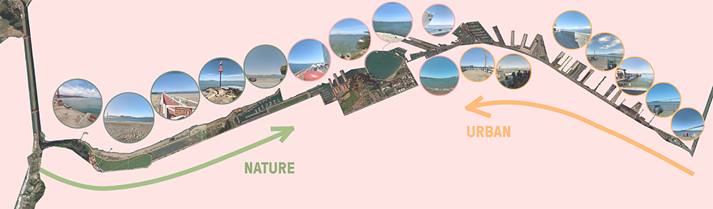
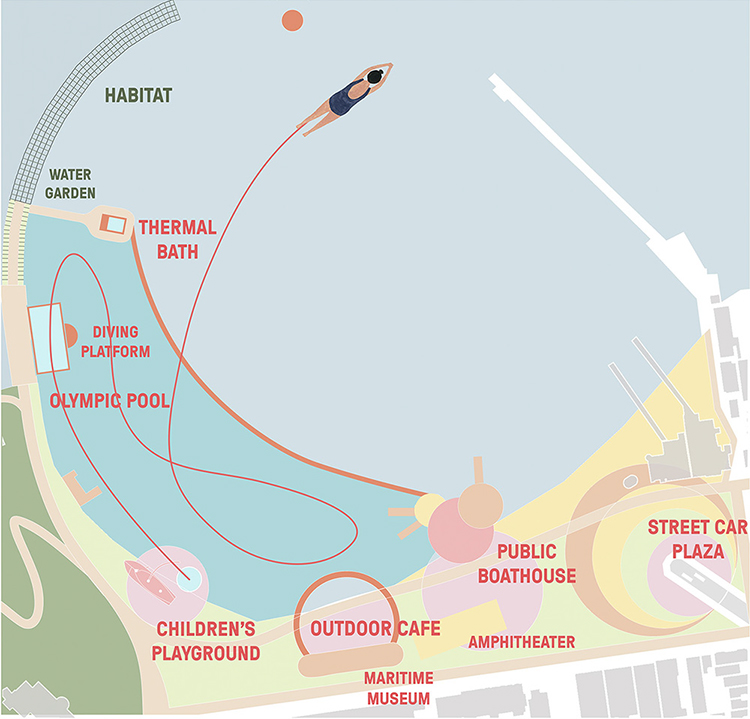
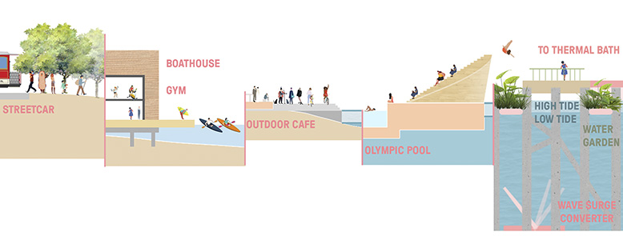

PLAY! PLAY! PLAY!
SAN FRANCISCO
Individual project
Summer 2018
SWA Student Summer Program
San Francisco’s Aquatic Park sits at the confluence of geography and history, the connection of local and federal lands, and the coming together of commercial and civic uses- and it is challenged by aging infrastructure and the myriad demands of a dynamic city. Studying in depth Aquatic Park’s past and the context of San Francisco’s Northern Waterfront, this project revisits the original purpose of Aquatic Park, and creates an urban playground for everyone to enjoy interaction with water.
The design aims to create a continuous experience along the curve defined by Muni Pier. The organization of programs along the arc enables the transition of experience from city to nature, and from social to solitary. Users' experience starts from the streetcar platform, where a big gathering space that allows different kinds of events. A public boathouse provides for small boat rental and other facilities such as a gym. An outdoor café connects with the Maritime Museum, which allows people to sit while enjoy the view. An Olympic size pool is provided with diving platform, with an amphitheater on the other side. The water garden connects to a thermal bath via a floating walkway.
   